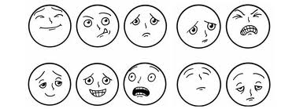
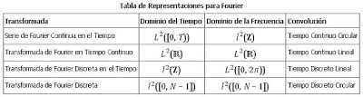

Un sistema de comunicaciones es un conjunto de dispositivos que son utilizados con la finalidad de transmitir, emitir y recibir señales de todo tipo, como voz, datos, audio, video, etc., además dichas señales pueden ser del tipo digital o analógica.
¿Cuáles son los Elementos de la comunicación?
Los elementos de la comunicación son:
• Emisor.
• Receptor.
• Código.
• Mensaje.
• Canal de comunicación.
• Ruido.
• Retroalimentación.
Los elementos de la comunicación son todos los factores que intervienen en el proceso de envío y recepción de un mensaje. Cada elemento aporta un valor que, dependiendo de la circunstancia, ayuda a mejorar o a distorsionar la comunicación.
Los últimos 150 años las tecnologías de comunicación han cambiado a un ritmo apresurado, que afecta a la forma como nos comunicamos o intercambios información. Así, con frecuencia se argumenta que con el advenimiento de las modernas tecnologías de comunicación se manifiestan cambios en los patrones de conducta de los miembros de la sociedad.
Sin embargo al menos hasta ahora diversas tecnologías de comunicación no han sido desplazadas como pudiera pensarse. El uso de la telefonía convencional ha permanecido constante durante un largo periodo, pero en la actualidad no solo podemos comunicarnos por medio del teléfono convencional sino que además podemos enviar fax, correos electrónicos, sms’s, llamadas hechas por teléfonos celulares y dentro de estos mismo podemos encontrar nuevas tecnologías como son el bluetooth y el WIFI los cuales nos permiten compartir archivos y navegar en internet y gracias a esto podemos hacer video llamadas
La importancia de las telecomunicaciones en la vida diaria de las personas, de las organizaciones y de los países es cada día mayor: las telecomunicaciones fomentan el desarrollo social y económico, mejoran los servicios de salud, de educación, de gobierno y la democracia, estimulan la creación de empleos, contribuyen a preservar el medio ambiente, entre muchos otros beneficios. Por eso, no es posible imaginarse el presente o el futuro sin telecomunicaciones.
La Comunicación es un proceso de intercambio de información, en el que un emisor transmite a un receptor algo a través de un canal esperando que, posteriormente, se produzca una respuesta de dicho receptor, en un contexto determinado
Emisor: es el que emite el mensaje. Ejemplos: un sujeto individual o un grupo de personas, pero también un mecanismo que nos avisa de que algo falla o un elemento de la naturaleza que nos alerta de que el tiempo va a cambiar.
Receptor: es el que recibe el mensaje y lo interpreta. Ejemplos: un sujeto concreto o un grupo, así como, también, puede serlo un mecanismo que actúa cuando otro le manda una señal.
Mensaje: es la información que se quiere transmitir. Ejemplos: puede encontrarse codificado en uno de los diferentes tipos de código: puede ser un mensaje hablado, escrito, dibujado, grabado en cd, etc.).
Canal: es el medio a través del cual se transmite el mensaje. Ejemplos: puede ser un medio artificial, como las cartas o un cd, o uno natural, como el aire.
Código: Conjunto de signos y reglas que, formando un lenguaje, ayudan a codificar el mensaje. Podemos encontrar lenguajes simples, como la luz roja sobre la puerta de un estudio de revelado, o más complejos como los distintos idiomas del mundo.
Contexto: Conjunto de circunstancias (lugar, hora, estado anímico de los interlocutores, etc.) que existen en el momento de la Comunicación. Es importante a la hora de interpretar correctamente el mensaje.
Las señales son signos, objetos, gestos, marcas, luces, sonidos, que se usa con el fin de indicar cierta información de algo o representar alguna cosa.
Las señales significan avisos, también sirven para diferenciar unas cosas de otras, una de las primeras señales que se utilizaron confines de comunicacionales fueron las señales de humo, sobre todo por los aborígenes de estados unidos. Hay señales que surgen espontáneamente como los gestos de un pedido de auxilio, y otras de modo convencional, como las señales viales.
Es un tipo de señal generada por algún tipo de fenómeno electromagnético y que es representable por una función matemática continua en la que es variable su amplitud y periodo en función del tiempo.
En pocas palabras es una forma de onda continua que pasa a través de un medio de comunicación y se utiliza para comunicarse mediante la voz

Ejemplos
• altavoz
• micrófono
• volumen
• frecuencia de sonido
Es un tipo de señal generada por algún tipo de fenómeno electromagnético en que cada signo que codifica el contenido de la misma puede ser analizado en término de algunas magnitudes que representan valores discretos, en lugar de valores dentro de un cierto rango.

Ejemplos
• pulsos del teléfono.
• Señal de resistencia eléctrica muy pequeña (0)
• señal de resistencia eléctrica grande (1)
• PC que se basan en sistema binario (1,0).
Es un tipo de señal generada por algún fenómeno electromagnético, estas señales pueden ser analógicas, si varían de forma continua en el tiempo, o digitales si varían de forma discreta (con valores dados como 0 y 1.
En la mayoría de los casos, las señales (tensiones o corrientes) aplicadas a los circuitos eléctricos pueden encuadrarse dentro de una de las siguientes categorías:
• Señales continuas (DC): Se trata de señales de valor medio no nulo con una frecuencia de variación muy lenta, por lo que se pueden considerar como constantes en el tiempo.
• Señales alternas (AC): Son señales que cambian de signo periódicamente, de tal forma que su valor medio en una oscilación completa es nulo. El caso más simple es el de una señal sinusoidal.
• Señales alternas superpuestas a un valor continuo: Obviamente, se trata de una superposición de los dos casos anteriores. Al valor medio de la señal se le llama componente continua, mientras que la oscilación recibe el nombre de componente de alterna.

Ejemplos
• Baterías.
• Pilas.
• Fuentes de DC.
• Fuentes de PC
La comunicación óptica es cualquier forma de comunicación que utiliza la luz, señas, gestos, etc. como medio de transmisión

Ejemplos
• Las señales de humo
• Banderas de colores
• El reflejo del sol por medio de un espejo
• El código Morse
• Faros marinos

El análisis de Fourier debe su nombre a Jean Baptist Joseph Fourier (1768-1830), un matemático y físico francés. Si bien muchas personas contribuyeron a su desarrollo, Fourier es reconocido por sus descubrimientos matemáticos y su visión en el uso práctico de las técnicas. Su interés se centraba en la propagación de calor, presentando en 1807 un trabajo en el Instituto Francés sobre el uso de funciones senoidales para representar distribuciones de temperatura.

El análisis de Fourier es elemental para entender el comportamiento de las señales de sistemas. Este es el resultado de que los senosoidales son eigenfunciones de sistemas lineales variantes en el tiempo (LTI). Si pasamos cualquier senosoidal a través de un sistema LTI, obtenemos la versión escalada de cualquier sistema senosoidal como salida.
Entonces, ya que el análisis de Fourier nos permite redefinir las señales en términos de senosoidales, todo lo que tenemos que hacer es determinar el efecto que cualquier sistema tiene en todos los senosoidales posibles (su función de transferencia) así tendremos un entendimiento completo del sistema.
Así mismo, ya que podemos definir el paso de los senosoidales en el sistema como la multiplicación de ese senosoidal por la función de transferencia en la misma frecuencia, puedes convertir el paso de la señal a través de cualquier sistema de ser una convolución (en tiempo) a una multiplicación (en frecuencia) estas ideas son lo que dan el poder al análisis de Fourier.
Las cuatro transformadas de Fourier que forman parte de este análisis son: Series Fourier, Transformada de Fourier continua en el tiempo, Transformada de Fourier en Tiempo Discreto, y La Transformada de Fourier Discreta
Gracias al teorema de Fourier es posible demostrar que toda función periódica continua, con un número finito de máximos y mínimos en cualquier período, puede desarrollarse en una única serie trigonométrica uniformemente convergente a dicha función, llamada serie de Fourier.